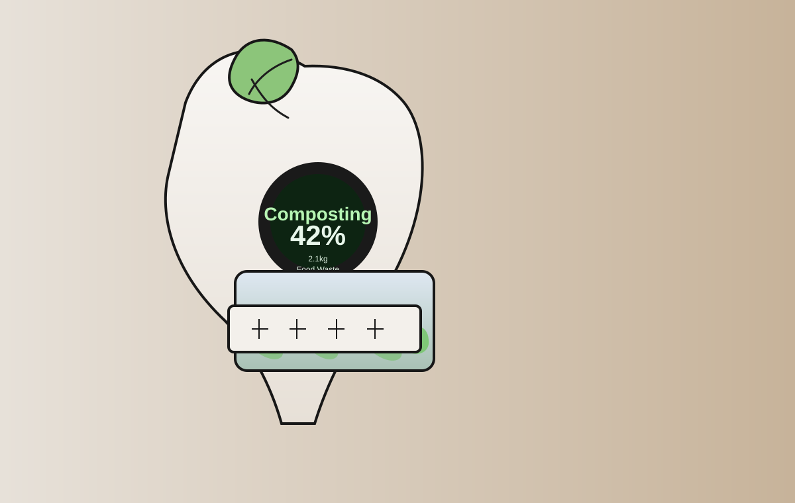
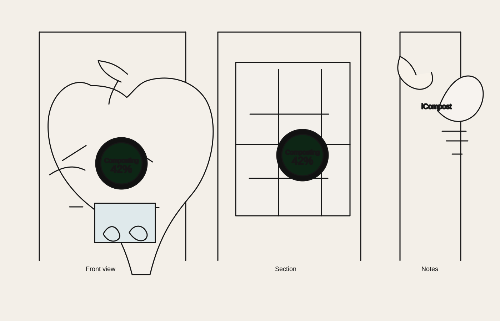
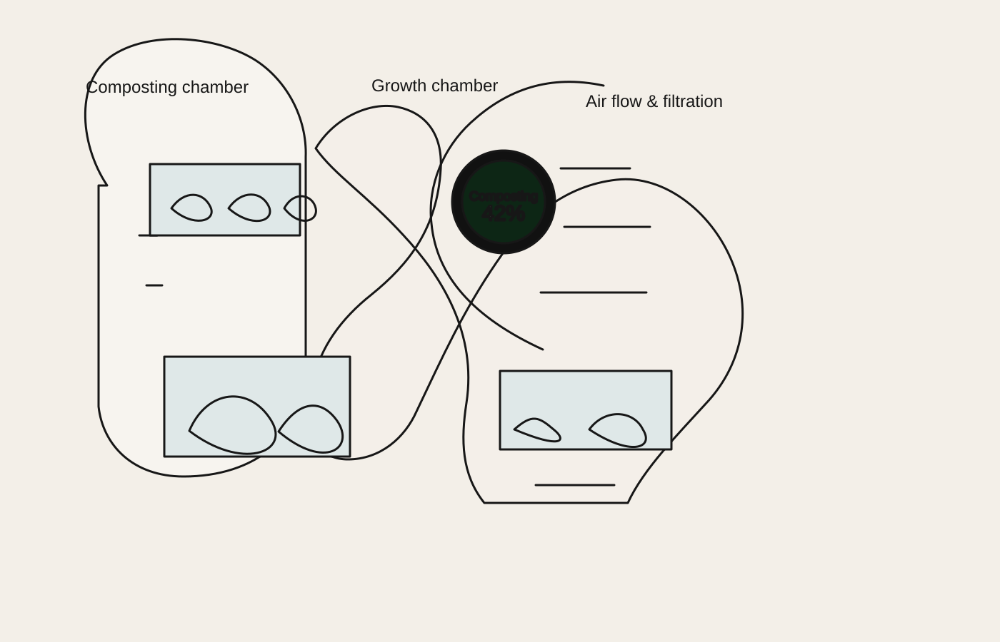

Chapter 06
Development & Evaluation.
A focused account of the development process and the evaluation of one selected innovative solution — from concept to measured outcome.
Smart compost bin concept
The iCompost system is designed as a compact indoor composting and smart garden unit. It combines food waste processing with a plant growth area, allowing organic material to be turned into nutrient-rich compost while also supporting the growth of crops in the same appliance.



How the system works
Food waste is placed in the composting chamber, where it is shredded, aerated, and broken down through controlled decomposition. The machine creates a composting environment that encourages microbial activity and stabilises the organic material, producing a usable compost byproduct.
Growth chamber
Below the main composting area is a dedicated growth chamber where crops can be planted. This section is designed to receive the nutrient-rich compost material generated by the system, providing a direct link between waste processing and plant growth. The crops are therefore fertilised by the byproduct of composting rather than relying on external soil or chemical fertilisers.
Why this is innovative
The key idea is circularity: organic waste becomes compost, and that compost feeds the plants beneath. This creates a closed-loop system in a small footprint, helping reduce household waste while also supporting food production in a controlled indoor environment. The result is a compact, self-contained system for sustainable living.